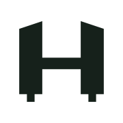

03 / Mark family



One silhouette, one operation. The compact drawing redraws the base on a 2-unit grid so it survives 16px.
Terrain / weather / field data
A cartographic interface system built from the supplied ridgeline dither footer. Six ridges from one seed, seven tones from one paper, and a mark that prints into the page. Depth is how many of the seven steps a surface is allowed to use.
One plate, drawn by the browser at 2 CSS px per cell: six ridges, seven tones, seed 7. Tone 1 is the stock, which is why the range can dissolve upward instead of fading.
01 / Materials
#F2F4EE#E5E9DF#1E3B2C#16211B#C9D94E#4A6B33Lichen is a fill, never a letter — 1.40:1 on stock. The type-safe green is moss at 5.51:1, and the dither's tone 5 follows it. Survey red #A82A1C is functional only.
02 / Type

03 / Mark family

One silhouette, one operation. The compact drawing redraws the base on a 2-unit grid so it survives 16px.
04 / Elevation
No shadow, no gradient sky, no peak logo. A hairline and a bench tone carry every elevation below the range.
05 / The rule
One loud field per view. Lichen is the field; the range is the only place it may be dithered. Ten form controls, three elevation bands, and one contrast pair that fails on purpose — kept visible so the rule can be checked.
Tokens: stock, pine, ink, lichen, moss, mist, night, alert. Two families. Three bands. One reserved surface.